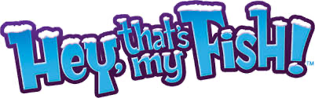
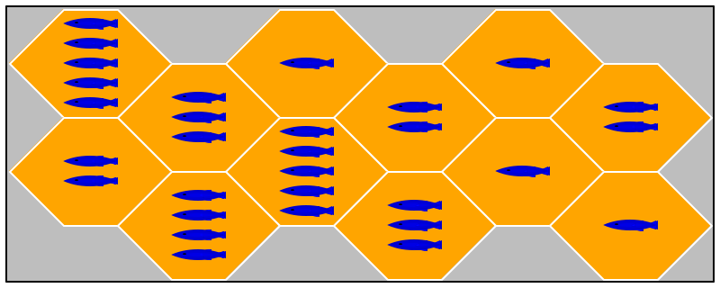
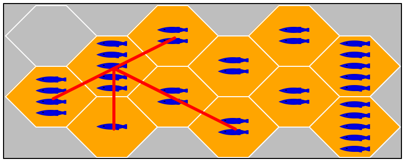

Fish

Overview Fish is a board game for two to four players.The game is loosely based on Hey, that’s my fish. But your CEO, aka instructor, has modified the rules and the modes of the game so no other implementations would work for this class.
The game board is a grid of hexagonal tiles, each of which displays a positive number of fish. The player avatars come in the shape of penguins, which of course eat fish. The goal of the game is to collect as many fish as possible.
At the beginning of the game, the players place their penguins on the board one-at-a-time in a round-robin fashion; the player’s take turns in ascending order of their age. Once all penguins are placed, the game starts.
Here, the words "croupier", "player", and such refer to software components, not a human being, which is why "its" is most appropriate. During a turn, a player must move one of its penguins across a boundary (not a corner) of hexagons; it may move across several boundaries in a row but the move must be a straight line up to but not including holes in the board and avatars on tiles. The tile on which the penguin rested gets removed from the board and its fish go into the possession of that penguin’s player. When the turn is over, it’s the next oldest player’s turn, and so on. A player that cannot move any of its penguins is skipped.
The game ends when no player can move a penguin.
Pieces Here are images of the two basic game pieces and a randomly constructed board:
a tile
a penguin
(see "taste" in the margin)
a 4 x 3 board

4 is the number of rows, 3 the number of columns

Starting the Game The croupier determines the exact layout of the board, after being told the row by column dimension. Specifically, the croupier may wish to remove some tiles from the get-go to make the game challenging.
Next the croupier assigns each player a different penguin-color. The available Colors are: "red", "white", "brown", "black". Each player receives 6 - N penguins where N is the number of players that participate in the game.
Starting with the youngest player, each player gets a turn to place one penguin on a tile. A penguin must not be placed on an empty spot. In a placement round, the players get turns in increasing order of age. The croupier will run as many placement rounds as there are penguins per player.
Playing One Round Once all players have placed all their penguins, the game begins. Again starting with the youngest player, each player gets a turn at moving one of its penguins.

Each player gets one turn per round. Then the croupier starts the next round, again with the youngest player.
Ending a Game A game ends when no player can move any of its penguins during a round. The player who caught the most fish wins the game. If several players caught the same number of fish, they are all winners.